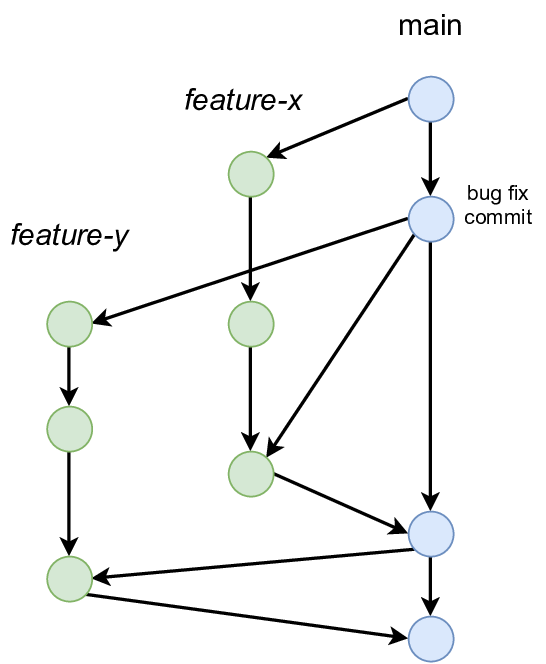

DVCS Workflow
Programmazione ad Oggetti
C.D.L. Ingegneria e Scienze Informatiche
Danilo Pianini — danilo.pianini@unibo.it
Roberto Casadei — roby.casadei@unibo.it
Dalle puntate precedenti
DVCS
- DVCS sono strumenti potenti per tenere traccia in maniera efficiente della storia di un progetto
- Nascono in particolare come evoluzione dei tradizionali VCS (SVN, CVS …)
- Enfasi su una miglior gestione del lavoro di team
DVCS e teamwork
-
“La potenza è nulla senza controllo!”
-
Ovvero … la mancanza di un metodo chiaro e condiviso per utilizzarli può portare a risultati DEVASTANTI
- effort necessario per la parte di gestione diventa presto preponderante e insostenibile
-
Ecco perché è bene adottare un workflow collaborativo
- i vostri progetti e i vostri partner di progetto vi ringrazieranno!
Quale workflow
- Come si sceglie un workflow?
- Abbiamo parlato di semplicità…
- In realtà è più corretto parlare di giusto trade-off tra semplicità ed esigenze
Lo stato dell’arte: git-flow
Definito da Vincent Driessen e spiegato in “A successful git branching model”

Alcune considerazioni
- Non lo useremo
- troppo complicato per i nostri scopi
- Comunque molto interessante perché racchiude tutti gli aspetti di un DVCS workflow
- Usiste lo strumento
git-flow(un wrapper attorno a git) che può essere installato per supportare il worflow “git flow”
I branch
- Sono il supporto fondamentale alle fasi del ciclo di vita del software
- Ogni fase/attività ha il proprio branch!
- Branching e merging all’ordine del giorno!
A proposito della nomenclatura dei branch
- Tipici nomi sono, ad esempio
feature-<feature-name>obug-<bug-name> - Si usa infatti categorizzare i branch in gruppi:
wip,feat,bug… - Varie convenzioni possono essere adottate (l’importante è essere consistenti)
- Uso degli slash come separatori:
feature/<feature-name>,bug/<bug-name>- Alcuni strumenti potrebbero dedurre una vista tree-like
- Aggiunta di “compontenti” al nome del branch, relativi ad es.
- all’autore/responsabile
- a una issue (cf. Issue su GitHub) o ticket, o l’ID di un task o user story
- Uso degli slash come separatori:
- Nota: questi aspetti di nomenclatura e formattazione sono importanti anche a livello di commit (cf. conventional commit)
Un modello più semplice
- Un branch principale
- Feature branch diversi e indipendenti, per sviluppi diversi
- da sincronizzare attraverso il branch principale (frequentemente per ridurre possibilità di conflitti complessi)

Feature branch: processo
- nel modello semplificato (assumendo il branch principale si chiami
develop) o in git flow

# Create a new feature branch from develop and share it
git checkout develop
git checkout -b feature-mynewfeaturename
git push origin feature-mynewfeaturename
# WHILE your_feature_is_unfinished
# work on your feature:
git add mynewfiles
git add mymodifiedfiles
git add mydeletedfiles
git commit -m "my commit message"
# Merge develop in to prevent big merge conflicts!
git pull origin/develop
# You may need to solve a merge conflict here!
# Share and save your work
git push
# END-WHILE
# Merge feature onto develop
git checkout develop
git merge feature-mynewfeaturename
# Push develop
git push
# Delete feature branch
git branch -d feature-mynewfeaturename
Il repo ufficiale del vostro progetto
Approccio 1: workflow semplice
- Qualcuno di voi agirà come “repo maintainer”
- Creerà quindi il repository su GitHub
- Gli altri membri del team faranno la
clone - Ciascuno lavorerà parallelamente sul proprio repository locale (working copy), condividendo tramite
pushepullil proprio lavoro con gli altri
Approccio 2: workflow avanzato
Ottimo per progetti di grosse dimensioni e/o per team molto eterogenei, dove qualcuno deve assicurarsi della qualità del codice prodotto da altri.
- Il maintainer crea il repository, ed è l’unico col diritto di scrittura
- Gli altri membri del team hanno una fork a testa
- Ciascuno lavora su una working copy, facendo pull dal repository “centrale” e push sulla propria fork
- Quando una feature è completa, o si arriva ad un buon grado di sviluppo, si apre una pull request
- Il maintainer revisiona il codice, assegna eventuali modifiche, e quando è soddisfatto accetta la pull request facendo il merge del codice nel repository principale
Questo workflow è un overkill per il progetto di OOP
- Ma è possibile che vi chiederemo di lavorare così, se farete tesi o un tirocini relativi ad alcuni nostri software